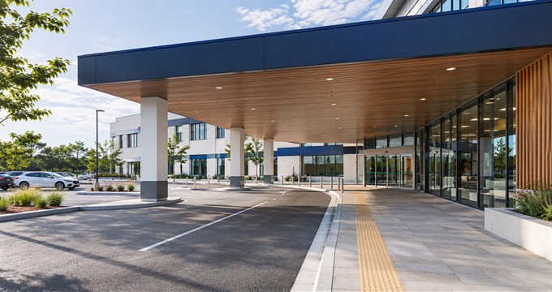
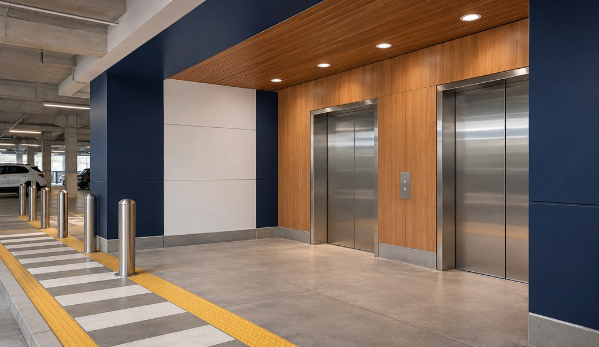

주차
주차 요금과 이용





주차 요금과 이용
| 구분 | 대상 | 요금 기준 | 확인 방법 |
|---|---|---|---|
| 진료 방문 | 외래 환자·영수증 미발급 검사 환자 | 2시간 무료 | 진료 영수증 또는 해당 부서 확인증 |
| 입·퇴원 | 환자와 보호자 차량 1대 | 입원 당일과 퇴원 당일 무료 | 원무 창구 등록 |
| 장례 상주 | 상주 차량 최대 6대 | 장례 기간 무료 | 장례 안내실에 차량 정보 제출 |
| 장례 방문 | 조문 차량 | 3시간 할인권 적용, 이후 일반 요금 | 장례 안내실 할인권 |
| 정기권 | 등록 차량 | 15일권·월권 | 주차 관리 창구 |
| 일반 차량 | 일반 내원객 | 입차 후 2시간까지 무료, 추가 요금은 30분에 1,500원이며 하루 상한은 20,000원 | 무인 정산기 또는 정산 부스 |
주차장 위치와 정산
- 약 350대 · 장애인 주차 구역
- 장애인 주차 구역
- 지상 전면 · 후면 주차장, 지하 1층 주차장
- 정산 기기 위치는 후문 쪽 1층과 매장 옆 지하 1층입니다.
- 할인 확인 자료가 없으면 일반 요금으로 정산해야 합니다.